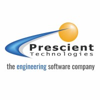

My work as a software engineer at Prescient Technologies, private limited: |
|  |
Here I have gained experience in neural networks, 3D geometry/computational geometry, graph theory and GNN, robotics and IoT, computer vision, C++ and python programming and web development. I also regularly gave talks here, such as: Non-Euclidean geometry, Tensor algebra, EM Radiation for engineers etc. |
|
When I joined I started working on computer vision problems using OpenCV. These were basically countour detections and text extraction et cetera. I then moved on to Optical Character Recognition in CAD/CAM problems. After which I was assigned to writing software for an autonomous intelligent vehicle for warehouses. I was also given training in C++ programming (with an emphasis on object oriented programming), Geometry (3D/2D, bezier curves, B-splines, BReps, Mesh, Point-clouds etc) and web development (HTML, CSS, JS). After this I was moved into the R&D department and I kept working on the autonomous intelligent vehicle which used a raspberry pi and several sensors like LIDAR, ultrasonic sensor, motor-encoder, magnetometer and gyroscope etc to function. Later I was needed in the Graph Neural Networks project, where I learned a lot of graph theory, graph neural networks, graph convolutional neural networks, neural networks and training etc in general. In our department we follow the agile scrum method with sprint plannings and everything. |